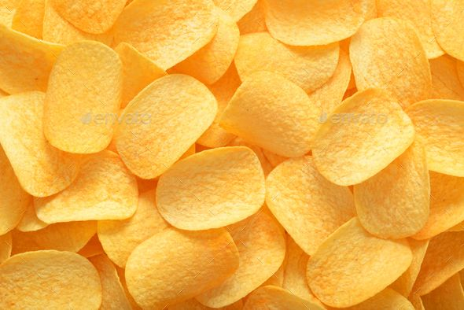

Stuffed Baked Potatoes

Easy to make and delicious potato crisps London style.
Ingredient list
- potatoes
- vegetable oil
- salt
Now its time to cook!!!
- Peel the potatoes
- Cut them in very thin pieces using the stabbing knife in your pocket.
- Soak the potatoes in cold water for 5 minutes.
- Drt the potatoes using a towel.
- Fry them until golden brown.
- Put them in a bowl, put 1g of salt and mix well.
Thank you for choosing my repice.